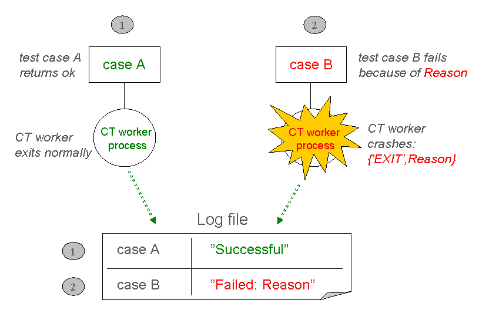
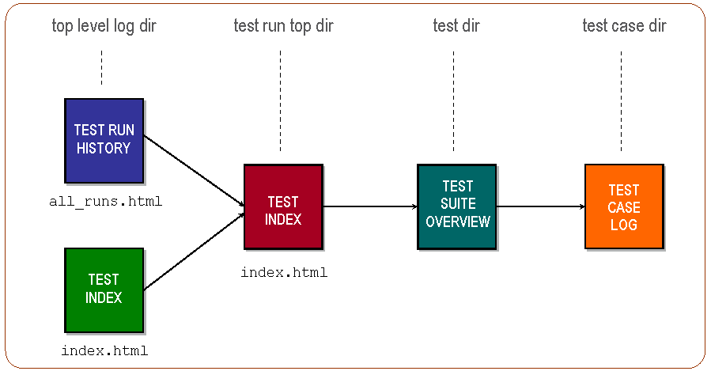

2 Getting Started
2.1 Are you new around here?
The purpose of this short chapter is to, with a "learning by example" approach, give the newcomer a chance to get started quickly writing and executing some first simple tests. The chapter will introduce some of the basics, but leave most explanations and details for the later chapters in this User's Guide. Hopefully though, after this chapter, you will be inspired and unintimidated enough to go on and get into the nitty-gritty that follows in this rather heavy User's Guide! If you're not much into "learning by example" and prefer to get into more technical detail right away, go ahead and skip to the next chapter. Again, the basics presented here will be covered in detail in later chapters.
This chapter also tries to demonstrate how dead simple it actually is to write a very basic (yet for many module testing purposes, often sufficiently complex) test suite, and execute its test cases. This is not necessarily obvious when you read the rest of the chapters in the User's Guide.
A quick note before we start: In order to understand what's discussed and examplified here, it is recommended that you first read through the opening Common Test Basics chapter.
2.2 Test case execution
Execution of test cases is handled this way:
Figure 2.1: Successful vs unsuccessful test case execution.
For each test case that Common Test is told to execute, it spawns a dedicated process on which the test case function in question starts running. (In parallel to the test case process, an idle waiting timer process is started which is linked to the test case process. If the timer process runs out of waiting time, it sends an exit signal to terminate the test case process and this is what's called a timetrap).
In scenario 1, the test case process terminates normally after case A has finished executing its test code without detecting any errors. The test case function simply returns a value and Common Test logs the test case as successful.
In scenario 2, an error is detected during test case execution which causes the test case B function to generate an exception. This causes the test case process to exit with reason other than normal, and as a result, Common Test will log this as an unsuccessful test case.
As you can understand from the illustration above, Common Test requires that a test case generates a runtime error to indicate failure (e.g. by causing a bad match error or by calling exit/1, preferrably through the ct:fail/1,2 help function). A succesful execution is indicated by means of a normal return from the test case function.
2.3 A simple test suite
As you've seen in the basics chapter, the test suite module implements callback functions (mandatory or optional) for various purposes, e.g:
- Init/end configuration function for the test suite
- Init/end configuration function for a test case
- Init/end configuration function for a test case group
- Test cases
The configuration functions are optional and if you don't need them for your test, a test suite with one simple test case could look like this:
-module(my1st_SUITE).
-compile(export_all).
all() ->
[mod_exists].
mod_exists(_) ->
{module,mymod} = code:load_file(mymod).In this example we check that the mymod module exists (i.e. can be successfully loaded by the code server). If the operation fails, we will get a bad match error which terminates the test case.
2.4 A test suite with configuration functions
If we need to perform configuration operations in order to run our test, we implement configuration functions in our suite. The result from a configuration function is configuration data, or simply Config. This is a list of key-value tuples which get passed from the configuration function to the test cases (possibly through configuration functions on "lower level"). The data flow looks like this:

Figure 2.2: Config data flow in the suite.
Here's an example of a test suite which uses configuration functions to open and close a log file for the test cases (an operation that would be unnecessary and irrelevant to perform by each test case):
-module(check_log_SUITE).
-export([all/0, init_per_suite/1, end_per_suite/1]).
-export([check_restart_result/1, check_no_errors/1]).
-define(value(Key,Config), proplists:get_value(Key,Config)).
all() -> [check_restart_result, check_no_errors].
init_per_suite(InitConfigData) ->
[{logref,open_log()} | InitConfigData].
end_per_suite(ConfigData) ->
close_log(?value(logref, ConfigData)).
check_restart_result(ConfigData) ->
TestData = read_log(restart, ?value(logref, ConfigData)),
{match,_Line} = search_for("restart successful", TestData).
check_no_errors(ConfigData) ->
TestData = read_log(all, ?value(logref, ConfigData)),
case search_for("error", TestData) of
{match,Line} -> ct:fail({error_found_in_log,Line});
nomatch -> ok
end.In this example we have test cases that verify, by parsing a log file, that our SUT has performed a successful restart and that no unexpected errors have been printed.
To execute the test cases in the test suite above, we could type this on the Unix/Linux command line (assuming for this example that the suite module is in the current working directory):
$ ct_run -dir .or
$ ct_run -suite check_log_SUITEIf we want to use the Erlang shell to run our test, we could evaluate this call:
1> ct:run_test([{dir, "."}]).or
1> ct:run_test([{suite, "check_log_SUITE"}]).The result from running our test is printed in log files in HTML format (stored in unique log directories on different level). This illustration shows the log file structure:
Figure 2.3: HTML log file structure.
2.5 What happens next?
Well, you might already be asking yourself questions such as:
- "How and where can I specify variable data for my tests that mustn't be hard-coded in the test suites (such as host names, addresses, user login data, etc)?" The External Configuration Data chapter will give you that information.
- "Is there a way to declare a number of different tests and run them in one session without having to write my own scripts? And can such declarations be used for regression testing?" The Test Specifications chapter answers these questions.
- "Can test cases and/or test runs be automatically repeated?" Learn more about Test Case Groups and also read about start flags/options in the Running Tests chapter and the Reference Manual.
- "Will Common Test execute my test cases in sequence or in parallel?" The Test Case Groups section in the Running Tests chapter will give you the answer.
- "What's the syntax for timetraps (mentioned above), and how do I set them?" This is explained in the Timetrap Timeouts part of the Writing Test Suites chapter.
- "What functions are available for logging and printing?" Check the Logging section in the Writing Test Suites chapter.
- "I need data files for my tests. Where do I store them preferrably?" You should read about Data and Private Directories for information about this.
- "May I start with a test suite example, please?" Sure!
You will probably want to get started on your own first test suites now, while at the same time digging deeper into the Common Test User's Guide and Reference Manual. You will find that there's lots more to learn about the things that have been introduced in this chapter. You will of course also be presented many more useful features, such as the ones listed above. Have fun!